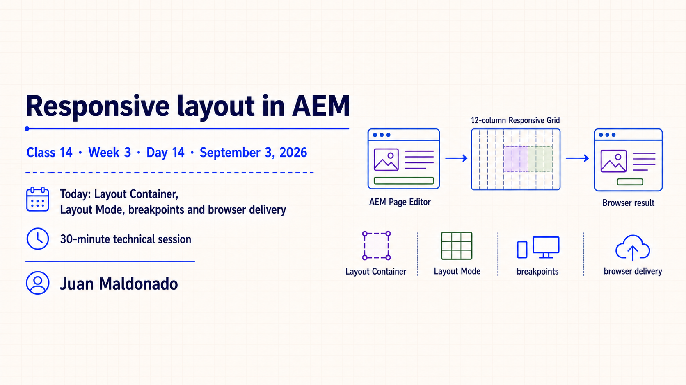
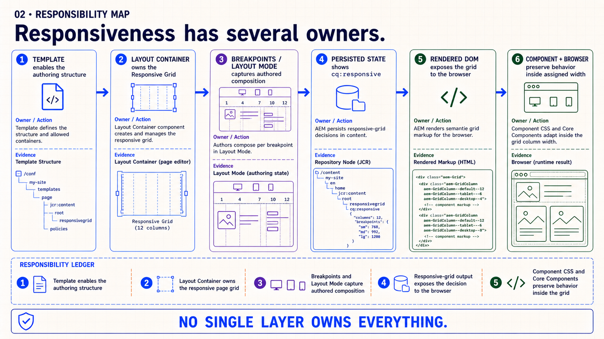
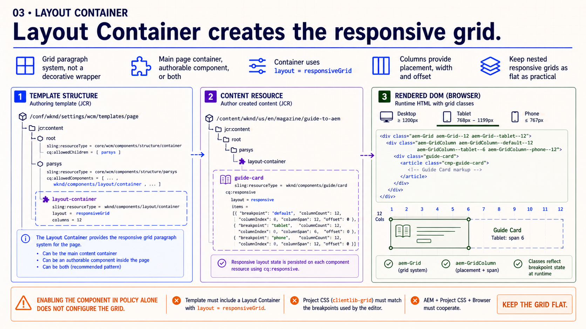
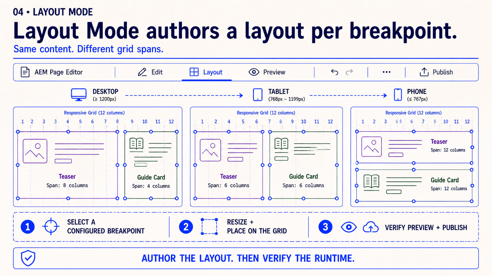
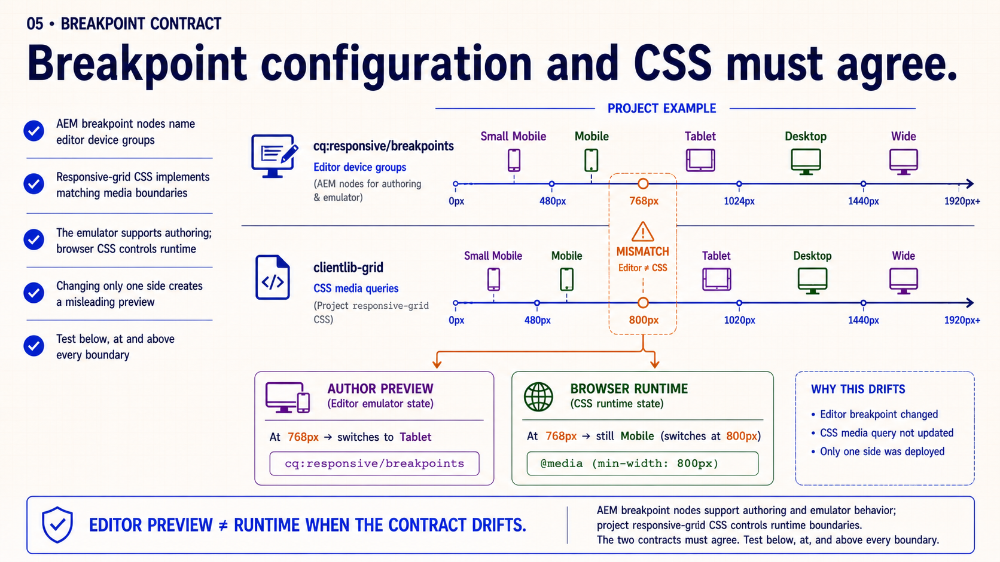
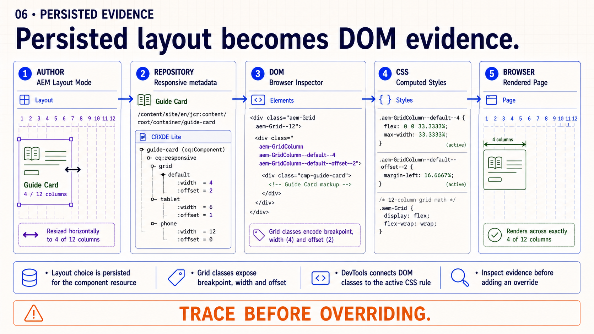
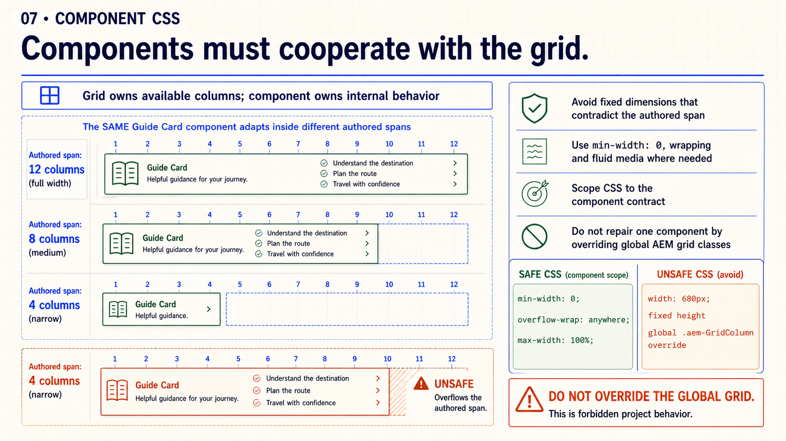
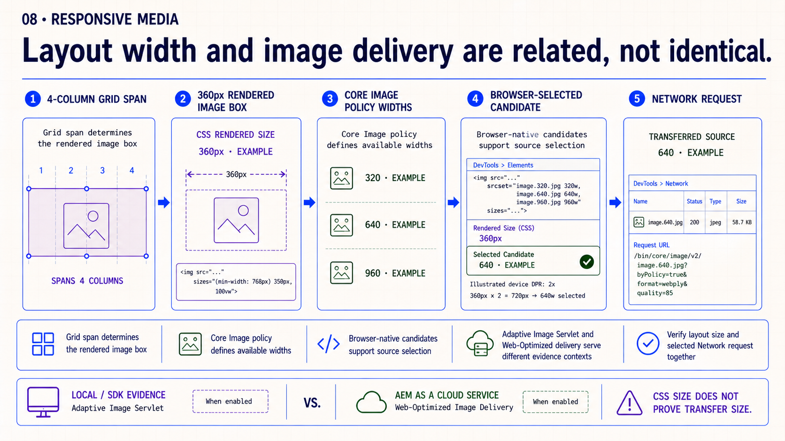
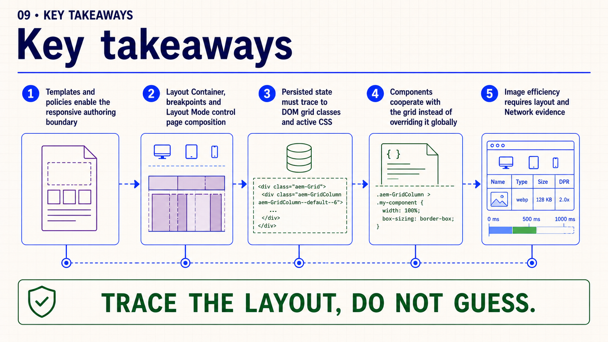
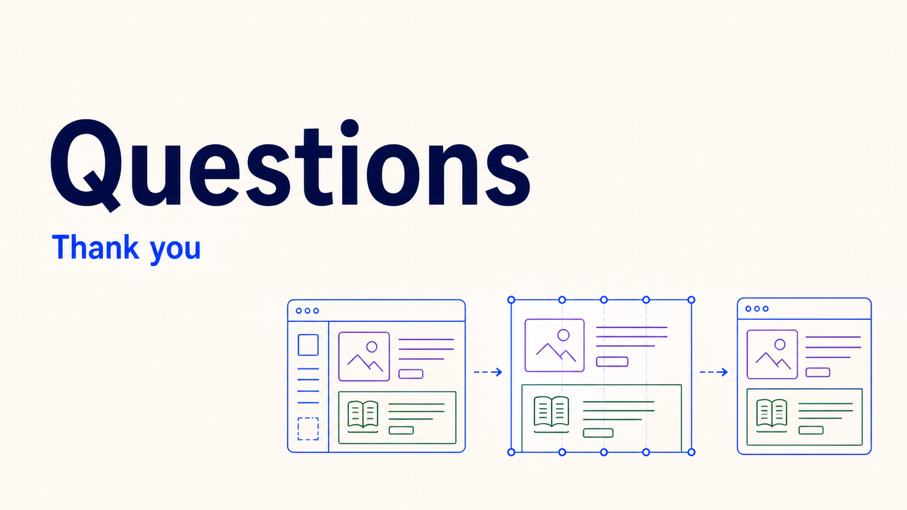

Observable outcome: each developer can author a responsive Guide Page and explain the result through its template, Layout Container, breakpoint configuration, persisted responsive state, rendered grid classes, active CSS and selected image request.
Topic summary
AEM responsiveness is a contract shared by several layers. The editable template establishes the authoring boundary; the Layout Container owns the responsive grid; configured breakpoints and Layout Mode let authors compose a page for available widths; and AEM persists those decisions so the renderer can expose them as grid-column classes. The Page Editor is therefore one stage in the workflow, not the runtime authority.
In the browser, responsive-grid CSS must agree with the editor’s breakpoint configuration, while each component remains responsible for behavior inside its assigned columns. Fluid media, wrapping and shrinkable flex or grid children preserve that boundary. Image efficiency is related but separate: the grid determines the rendered box, while Core Image policy and the browser determine which source is transferred.
- Enable the responsive authoring boundary in the template and policy.
- Use Layout Container and Layout Mode for page composition.
- Keep editor breakpoints and responsive-grid media queries aligned.
- Trace authored choices through repository state, DOM classes and computed CSS.
- Keep component CSS inside the component contract; do not override the global grid.
- Verify rendered image size and the selected Network request together.
30-minute agenda
| Time | Slide | Facilitation |
|---|
| 0–3 | 1 · Opening | Preview the editor-to-browser trace and establish the session scope. |
| 3–6 | 2 · Owners | Assign each responsive responsibility to its AEM or frontend layer. |
| 6–10 | 3 · Layout Container | Connect template structure, content resources and responsive-grid DOM. |
| 10–14 | 4 · Layout Mode | Follow one composition across desktop, tablet and phone views. |
| 14–18 | 5 · Breakpoints | Compare editor widths with the project clientlib’s media queries. |
| 18–21 | 6 · Persisted evidence | Trace one authored resize through repository, DOM and computed CSS. |
| 21–24 | 7 · Component CSS | Separate page-grid ownership from internal component behavior. |
| 24–27 | 8 · Image delivery | Distinguish the rendered image box from the transferred source. |
| 27–28 | 9 · Key takeaways | Summarize the five evidence checkpoints. |
| 28–30 | 10 · Questions | Questions from the audience only; no review exercise. |
Complete slide deck
Study each slide with its presenter notes, then copy or download the PNG.

Detailed presenter notes
- Frame: this is an AEM layout session, not a general media-query introduction.
- Preview: follow one Guide Page from its template and editor state to responsive-grid output and browser delivery.
- Principle: no single file owns the result; trace the handoffs before changing CSS.
- Thread: keep the same Teaser, Guide Card and Core Image visible throughout the session.

Detailed presenter notes
- Read left to right: template, Layout Container, breakpoints and Layout Mode, persisted state, rendered DOM, then component and browser.
- Ask for evidence: template structure, editor behavior, repository state, grid classes, computed CSS and Network requests prove different stages.
- Avoid: do not repair missing page-grid configuration inside a component clientlib.
- Transition: begin the detailed trace with the structural owner of the grid.

Detailed presenter notes
- Define: a Layout Container is a grid paragraph system, not a decorative wrapper.
- Show:
layout = responsiveGrid connects the template or content resource to aem-Grid and aem-GridColumn output.
- Boundary: allowing a component in policy does not configure the full responsive grid.
- Design rule: keep nested responsive grids exceptional and as flat as the requirement permits.

Detailed presenter notes
- Demonstrate: select a configured breakpoint, enter Layout Mode and resize with snap-to-grid handles.
- Compare: use an intentional desktop split, tablet spans and phone stack while preserving component content.
- Qualify: device names and pixel boundaries are project configuration, not universal AEM defaults.
- Verify: leave Layout Mode and check Preview and Publish; an editor canvas is not runtime proof.

Detailed presenter notes
- Compare:
cq:responsive/breakpoints drives editor views while the responsive-grid clientlib drives runtime media queries.
- Failure: different boundaries create an authoring preview visitors cannot reproduce at the same viewport.
- Ownership: record who changes each rail so configuration and CSS stay one contract.
- Test: inspect immediately below, exactly at and immediately above every boundary.

Detailed presenter notes
- Trace: resize one Guide Card to four columns, then locate its responsive metadata and breakpoint-specific grid class.
- DevTools: inspect the outer grid item, the matching CSS rule, offset if present and computed width.
- Diagnose: distinguish missing author state, wrong rendered classes, an unloaded grid clientlib and internal component overflow.
- Rule: do not add a high-specificity override until Author → repository → DOM → CSS → layout is intact.

Detailed presenter notes
- Separate owners: the page grid assigns space; component CSS controls behavior inside that space.
- Passing pattern: fluid media, wrapping and
min-width: 0 let flex or grid children shrink.
- Failure pattern: fixed widths, fixed heights and unbreakable content contradict the authored span.
- Scope: correct the project component; never patch a local defect by overriding global
.aem-GridColumn rules.

Detailed presenter notes
- Distinguish: a four-column span sets the image box; it does not determine transferred bytes by itself.
- Connect: Core Image policy exposes candidate widths and the browser selects a source for layout size and density.
- Environment: use Adaptive Image Servlet evidence locally; cloud projects may enable Web-Optimized Image Delivery.
- Record: capture the grid span, rendered dimensions and selected Network request together.

Detailed presenter notes
- Review: template and policy expose the boundary; Layout Container, breakpoints and Layout Mode author the composition.
- Evidence: persisted state must explain rendered grid classes and active browser CSS.
- Component rule: cooperate with assigned columns and keep local fixes out of global AEM grid selectors.
- Media rule: prove both layout size and the selected image request. Trace the layout; do not guess.

Detailed presenter notes
- Close: thank the audience and leave the floor open for questions they want to raise.
- Boundary: do not introduce prompts, an exercise, an assignment or another concept.
Responsive layout trace
- Confirm that the page template includes a Layout Container configured for
responsiveGrid.
- Select a configured breakpoint and author a two-column desktop composition in Layout Mode.
- Create an intentional stack at the narrower breakpoint, then verify Preview and Publish.
- Inspect the component resource and record its persisted responsive layout state.
- Use DevTools to connect the rendered grid-column classes to the active responsive-grid rule and computed width.
- For the Core Image, record rendered dimensions and the selected Network request.
Acceptance: editor and browser layouts agree at the tested boundaries; the component has no global grid override; repository, DOM, CSS and Network evidence explain the result.
Official reading
{kind=link}
{kind=link}
{kind=link}
{kind=link}
{kind=link}
{kind=link}
{kind=link}
{kind=link}
{kind=link}
{kind=link}